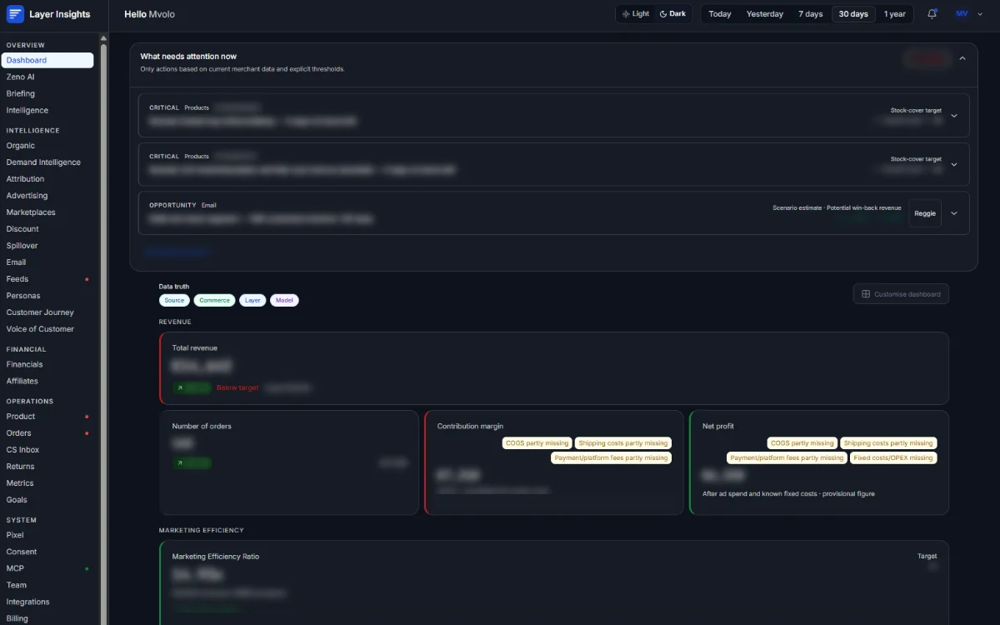

LayerInsights
SaaS QA · MvoloAn e-commerce intelligence platform that brings revenue, advertising, margins, customers, products, and marketplaces together in one dashboard for online stores. I handle QA on the platform as part of my role at Mvolo.
- Write test plans, test cases, and launch checklists for platform releases
- Test dashboards, store integrations such as Shopify, and the data flows between modules
- Validate the English and Dutch versions, responsive layouts, and browser compatibility
- Inspect API requests and payloads in DevTools to trace issues, and file bug reports with repro steps and evidence
- Build automated tests for critical user flows to speed up regression checks before releases